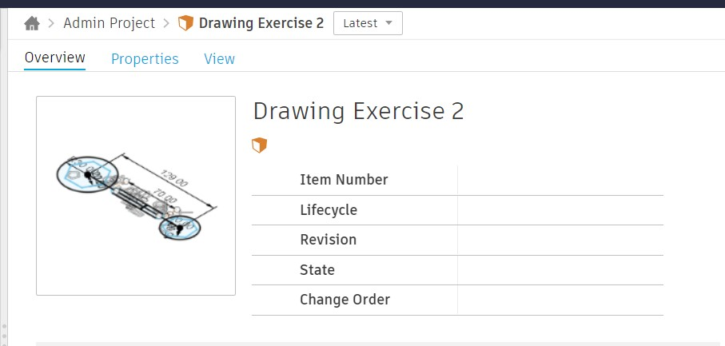

Blog

Week 1
This is the first week of me having this module. I found out that I am the only business student in this elective and I am ready to embrace the unique experience I will encounter.
This week I learnt about how to stay safe and follow the rules of the Fablab and a brief rundown on how the module is going to be like. I also managed to pass my safety quiz which will allow me to enter Fablab yay!
Week 2
This week I learnt about the different tools I will get to use during this elective and which one to choose. This is also my first time doing coding of any sorts. I am excited to learn about HTML. Another life skill attain!Belows show me trying to push origin to github and my Sublimetext codes
Week 3
I learn about CSS this week which is the layout of the website as it helps to decorate the HTML codes, sort of. I also made a Github account and I learnt that most of the companies started off using Github to upload their codes and do testing. I have successfully managed to put my HTML code into a Github website which is avaliable to be viewed by anyone!Below shows my stylesheet
Week 4
I learn about CAD and did my first Fusion360 sketch which was drawing exercise 1. Afterwards, we started doing many exercises on Fusion360 to learn about the different function and capabilities.

Week 5
This week we learn about Computer Controlled Cutting which will be used for laser cutting. Later that week, we had a more indepth lesson about Computer Controlled Cutting which will allow us to have deeper knowledge about the technology. Turns out laser cutting have many degrees of power and high accuracy. As I am from business school, this is all very new to me and I find it very interesting!
Week 6
This week we did learn how to create sketches for 3d printing. I created a sketch of a chess piece where it will be 3d printed later on after learning how to use the machine and passing the quiz over the holidays. Below shows the example of my sketches.

Week 7
This week i learn about laser cutting. How it would be done from creating the sketch to making the outline hairline for laser cutting.
Week 8
This week we get the chance to do the quiz for 3D printing. I managed to pass the quiz which enables me to book for practical lesson before being able to use the 3d printer for my own project. I learnt many things about what to do and not to do when operating the 3d printer.
Week 9
Vacation week, rest time.
Week 10
This week we get the chance to do the quiz for Laser cutting. I managed to pass the quiz which enables me to book for practical lesson before being able to use the laser cutter for my own project. I learnt many things about what to do and not to do when operating the laser cutter.
Week 11
This week we got the chance to do laser cutting where i cut my own music box. This is very exciting! I first designed the box before loading it into the computer at fablab to do some final editings and measurements of the 3mm plywood before laser cutting my music box which turns out great! Belows show my process and my music box SVG
Week 12
This week we learnt about Basic Electronics, Soldering and Breadboarding. Below shows what i did for that lesson and im very glad to have this opportunity to learn how to do sketches of the arduino board to check if it works before physically plugging it all in. This is also one of my tinkercad design for CA2.
Week 13 & 14
I got the chance to touch an actual Arduino board. I also tried to use ultrasonic sensor to detect my hand and buzzer to emit sound. Very interesting experience!
Week 15
I managed to power up the LCD display where it would show the moisture level of the soil and display it.
Week 16
This week i continued on my final project and i managed to setup and got my soil moisture sensor to work.
Week 17
I attempted to project the animation on the oled display however i accidentally fried it by swapping VCC and GND. :(
Week 18
This week is the week we all have been waiting for. To showcase our final project, the one we all have been learning and working towards for.